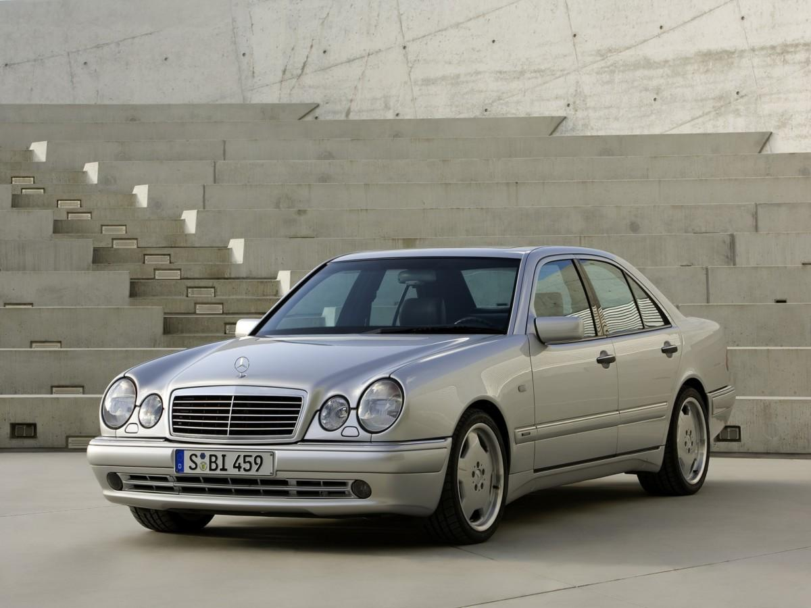

Mercedes-Benz W210
Комфорт та надійність класичного бізнес-седану
Основні характеристики
- Роки виробництва: 1995–2002
- Тип кузова: Седан / Універсал
- Двигуни: бензинові та дизельні (1.8–5.4L)
- Коробка передач: МКПП / АКПП
- Привід: RWD / 4Matic
- Потужність: 95–354 к.с. (залежно від моделі)